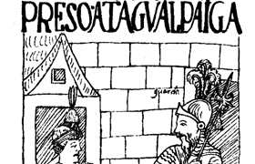

Lezione 11  Conquista delle Americhe
Conquista delle Americhe

Questa testimonianza scritta, lasciata nel 1615 dall’inca Felipe Guamàn Poma de Ayala, è una delle poche “voci dei vinti” che sono giunte ai nostri giorni, e che sono servite agli storici per conoscere la storia del Perù e delle conquiste degli spagnoli.
Nel brano che segue l’autore racconta l’incontro tra Pizarro e Almagro, condottieri spagnoli, e Atahualpa, sovrano inca: è l’incontro tra due modi di vivere completamente diversi, tra due realtà che per millenni hanno vissuto all’insaputa una dell’altra, senza mai incontrarsi. La prima conosceva la parola scritta, la seconda no.
«Don Francisco Pizarro, don Diego de Almagro e fra’ Vicente dell’ordine del signor san Francesco. Atahualpa Inca dai bagni tornò alla città e alla corte di Cajamarca.
E arrivato in tutta la sua maestà e circondato dai suoi capitani e da molti altri, attorniato da centomila indiani, nella città di Cajamarca, nella piazza pubblica, al centro, al suo trono e seggio, fatto di gradini, e che si chiama usno, sedette Atahualpa Inca.
E subito cominciarono don Francisco Pizarro e don Diego de Almagro a parlargli mediante la lingua (l’interprete, ndr) Felipe, indiano di Guancabilca. Gli dissero che erano messaggeri e ambasciatori di un grande signore e che si mostrasse amico, poiché solo per questo venivano. Rispose con grande cortesia a quanto diceva don Francisco Pizarro e lo dice la lingua Felipe, indiano. Risponde l’Inca con grande maestà e disse che sarà vero che da una terra tanto lontana venivano come messaggeri e che credeva che si trattasse di un grande signore, ma che non era tenuto a fare amicizia, perché pure lui era un grande signore nel suo regno.
Dopo questa risposta interviene a dire la sua fra’ Vicente, tenendo nella mano destra una croce e nella sinistra il breviario. E dice al detto Atahualpa Inca che pure lui è ambasciatore e messaggero di un altro signore, grandissimo, amico di Dio, e che gli fosse amico e adorasse la croce e credesse nel vangelo di Dio, e non adorasse null’altro, perché tutto il resto era cosa da burla. Risponde Atahualpa Inca e dice che non deve adorare nessuno se non il Sole che non muore mai, e le sue huaca (oggetti e luoghi sacri, ndr) e gli altri dèi che ha nella sua legge: a quello era fedele.
E domandò il detto Inca a fra’ Vicente chi glielo aveva detto. Fra’ Vicente risponde che glielo aveva detto il vangelo, il libro. E disse Atahualpa: «Dallo a me, il libro, perché me lo dica». E così glielo diede e lui lo prese tra le mani; e cominciò a sfogliare le pagine di detto libro. E dice il detto Inca: «Perché non me lo dice, a me, né mi parla questo libro?». E parlando con grande maestà seduto sul suo trono, si lasciò cadere di mano il detto libro, il detto Inca Atahualpa.
Allora fra’ Vicente si mise a gridare e disse: «A me, cavalieri, contro questi indiani gentili che sono contro la nostra fede!». E don Francisco Pizarro e don Diego de Almagro, dal canto loro, si misero a gridare dicendo: «Avanti, cavalieri, contro questi infedeli che sono contro la cristianità nostra e del nostro imperatore e re, diamogli addosso!».
E così subito cominciarono i cavalieri e spararono i loro archibugi e diedero battaglia e i detti soldati cominciarono a uccidere indiani come formiche. E per il terrore degli archibugi e il rumore dei sonagli e delle armi e del vedere per la prima volta uomini mai visti, essendo piena di indiani la piazza di Cajamarca, crollarono le mura che la circondavano e si uccisero tra loro. Nell’accalcarsi e calpestarsi e nell’inciampare dei cavalli, morì tanta gente tra gli indiani che è impossibile contarla.
Dalla parte degli spagnoli morirono cinque persone per colpa loro, perché nessun indiano osò, atterrito dallo spavento. Dicono che stavano in mezzo agli indiani morti quei cinque detti spagnoli; e che devono essere stati travolti come gli indiani e che devono avere inciampato, i detti cavalieri.
Così don Francisco Pizarro e don Diego de Almagro catturarono Atahualpa Inca. Dal suo stesso trono lo portarono via senza ferirlo e lo tenevano prigioniero sotto scorta gli spagnoli, presso il capitano don Francisco Pizarro. Rimase molto triste e sconsolato e spodestato della sua maestà, seduto a terra, privo del suo trono e del suo regno».
(Felipe Guamàn Poma de Ayala, Conquista del Regno del Perù, Sellerio Editore, Palermo, 1992)